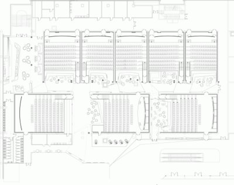

| The cinema displays a timetable, showing which movies show on which screens at what time. Because of administrative reasons, there are some weird constraints on where and when the movies can be shown. The manager of the cinema isn't even sure the timetable for the next day can be organized in a way that satisfies all constraints! He turned to you for help. |  |
The timetable is a table, where each row is a 2 hour block, and each column represents one of the screens. For each time block, there are a number of movies they want to show. One movie can be shown on several screens, but only consecutive screens (that is, screens that are neighboring columns in the timetable). There can be screens that don't show any movies in a time block. The cinema always has enough screens, there is no limit on that. One screen can only show one movie in one time block.
The extra constraints are on which movies can follow each other on the same screen. For each movie m, there is a list of companion movies from the previous time block that it can follow on the same screen. For each of the companion movies on this list, there must be at least one screen where m follows it. All the screens that show m must either show one of the companion movies in the previous time block, or be empty. Each movie must be shown on at least one screen.
Tell them if it's impossible to make the timetable this way, or if it's possible, tell them one way the movies can be distributed in the last time block.
The fist line of a test case contains one number, B, the number of time blocks in that test case. Then, for each of the B blocks, the movies are described in the following way.
The first line of a time block contains one number, M, the number of movies to be shown in that time block. Each movie is described on one line, first is the number L, which is the length of the list of companion movies. The rest of the line is L numbers, the indices of the companion movies from the previous time block.
The second test case is similar, but there is a movie in the third time block. There is no way to show it, because it would need to follow two movies that were shown on the two ends of the cinema, but it can't follow the movie that was shown in the middle.
Example input2 2 2 0 0 3 2 0 1 1 0 1 1 3 2 0 0 3 1 0 2 0 1 1 1 1 2 0 2 | Example output1 0 2 impossible |